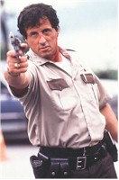
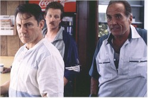
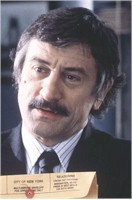
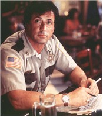

Contents | Features | Reviews | News | Archives | Store |
 |
|
| Movie Credits | Buy It! |
Cop Land
Review by Eddie Cockrell
Posted 15 August 1997
| Written and directed by James Mangold Starring Sylvester Stallone, Harvey Keitel, |
Imagine a small town just across the Hudson River from New York City that's been quietly rigged by the big city cops who've settled there to favor their own in all regards: low-interest mortgage rates, a crime-free environment, that sort of thing. Then imagine that the slow-witted but honest guy these cops have hired to be their straw sheriff discovers the corruption on which the town is built and is faced with a moral choice unlike anything he's ever encountered.
This is the splendid premise of writer-director James Mangold's second feature (more on his first later), and if the last paragraph sounds like a vague description of a vintage western (Ford? Hawks? Mann? Peckinpah?) and you grieve for the bygone age of vintage westerns, then you're ready for Cop Land, which is the most exciting, subversive and satisfying drama of the year to date: High Noon in New Jersey. The bold strokes of Mangold's script, coupled with the nuances of the huge, breathtakingly good ensemble cast conspire to give the quintessential small (and fictitious) town of Garrison and the awkward nobility and moral complexity of Sheriff Freddy Heflin (Sylvester Stallone) the mythic status of, say, a Dodge City or a Pike Bishop.
Returning home from a Manhattan club, hotshot young cop Murray "Superboy" Babitch (Michael Rapaport) kills two young black men in a sports car on the George Washington Bridge after a traffic altercation. Babitch's Uncle Ray Donlan (Harvey Keitel), the brains behind Garrison, thinks fast and not only plants a weapon on the scene (the men had brandished a Club at Murray, which he mistook for an automatic weapon) but announces that Superboy's committed suicide by jumping in the river. As Babitch is given a hero's funeral, we learn that the policeman is actually alive and holed up in Garrison until Ray can figure out what to do.
At the same time, pressure is exerted on Ray and his right hand man Jack Rucker (Robert Patrick) from two directions: former insider Gary Figgis (Ray Liotta), convinced that Ray engineered the death of his partner, confronts them in 4 Aces, the town tavern, and threatens to go public with the secrets of Garrison. And internal affairs agent Moe Tilden (Robert De Niro) takes an interest in the case and begins sniffing around the town, convinced that some sort of coverup is afoot.
In the middle of all this stands Stallone's Sheriff Heflin, a dull, gentle, slow-witted soul who spends most of his time, as someone says, on "church traffic and cats in trees." Barred from joining the force due to an ear injury suffered while rescuing Liz (Annabella Sciorra) from a car crash in his youth, Freddy's most complex chores seem to be mediating the altercations between Liz and her hotheaded cop husband Joey (Peter Berg) and managing his small staff of deputies (Noah Emmerich and Janeane Garofalo).
As tensions mount within the town and the true nature of Garrison's secrets are revealed (think mobs and drugs), the increasingly isolated Heflin must take a stand against Ray and his cronies, which he does in a methodical and satisfying climax worthy of The Wild Bunch.
At a breakneck 105 minutes, Cop Land lacks the deliberate pace and detailed characters studies of Heat or Prince of the City but in many ways is a better film for it: cast with an eye on the baggage its actors bring to their roles, the movie needs only one or two moments with the likes of Liotta, Patrick, and, in smaller roles, Cathy Moriarty as Ray's tired wife and John Spencer as a plainclothes cop to paint vivid pictures of their characters' moral compasses and motivations. Fans of Mean Streets will shiver at the knowing yet almost throwaway bravura of the first face-to-face meeting between De Niro and Keitel, while Berg and Rapaport bring the foolish invulnerability of youth to their roles. The potency of the cops' duplicity becomes obvious during their scenes in uniform: seen conniving in plainclothes, it's frightening to imagine these damaged goods as the thin blue line.
Yet Cop Land would be far less satisfying a triumph than it is with anyone else than Stallone as Sheriff Heflin. A meek, shambling man (you'll hear that phrase a lot, but it fits nicely), he's is so used to being ordered around -- "Go home, Freddy" is the usual -- that he can barely make eye contact with anyone and is resigned to people walking away when he's in the middle of a sentence. Freddy is certainly shy and nearly broken, but he isn't stupid, and although it takes him a while to get there, get there he does: with only one way out, his dazed dignity supports him during the climactic bloodbath.
Stallone has always been a fine actor (look at F.I.S.T. again, and of course the first Rocky), but after hitting it big early he settled quickly into the role of one-dimensional good guy that has not only molded his on-screen persona but paid the bills quite nicely as well. Although it was always jarring to square the magazine articles about his art collection and self-deprecating wit with fodder like Judge Dredd, one sensed that there was always more to the man than his roles let on. In Cop Land he's clearly up to the challenge of a stretch: looking more chunky than fat, Freddy has none of the annoying tics we've come to associate with Stallone, the "yo, Adrian" curl of the lip and so forth. Instead Freddy speaks nearly in a whisper, and hardly at all during the final sequences of the film. For once, one of his justice-seeking characters really do let his actions speak for him: Cop Land is easily the most three-dimensional, emotionally satisfying performance Sylvester Stallone's given since Rocky first entered the ring. Taking a page from the playbooks of Tom Cruise, Bruce Willis and John Travolta, Stallone seems poised to alternate the more commercial roles (apparently, Rambo 4 is next) with more thoughtful fare. On the strength of the low-keyed but inspired Freddy Heflin, he can pull it off.
Clearly, such a performance wouldn't have been possible without the opportunity afforded by writer-director James Mangold's provocative story. As in his fine debut Heavy, Mangold brings a fresh, contemplative twist to the comfy yet somehow sinister world of small town America, northeast division. Punctuated with weather-beaten mailboxes, and lived in old, cluttered houses that serve as physical manifestations of inner turmoil, his two movies are full of people who by geographical definition spend far too much time together. And as surely as that familiarity breeds explosive contempt, there is a central figure, physically large but emotionally small, who is at the center of the unease. At once so different yet the same that they could be close relatives in a dysfunctional family, Cop Land's Freddy and Heavy's Victor (Pruitt Taylor Vince, giving one of the great unheralded performances of recent years) both manage to bring dignity to weakness and somehow find the inner strength to carry on. In fact, Victor's anguished murmur of "I didn't want anything to change" in Heavy might well be the central theme of Cop Land: the cocoon-like surface safety of a small town, says Mangold, can just as easily lull people into a moral torpor from which there is no revival (a view reinforced by two great taverns of the mind, Pete & Dolly's in Heavy and the 4 Aces in Cop Land).
Don't expect the razzle-dazzle of a Face Off or Con Air here: Cop Land is big news precisely because of its small size, a modest but taut social thriller that speaks volumes about the basest of human impulses that lie beneath the safe, bucolic places that everyone's yearning for. The complicity among Garrison's corrupt cops and figures of organized crime can be seen as Mangold's McGuffin, Hitchcock's nonsensical term for the useless event or item that sent his films on their thrillseeking way. What's really important is how people relate, and the rottenness that can seep in to even the most idyllic settings.
Cop Land feels so right in part because of the thought Mangold put into it -- he's a very good director who appears to have a lot on his mind -- and in part because there's nothing else in the multiplexes just now that provides the same level of provocative enjoyment. As appropriate for an art-house audience as it is for a gaggle of Saturday night thrillseekers, Cop Land may get swallowed up by the leftover din of big-budget behemoths as this summer lurches to a close but should, if there's justice in the movie world, figure prominently at Oscar time: remember, Sly was nominated, but didn't win, for writing and acting in Rocky -- and hasn't been in the same room with the statue since. Just think: after more than a quarter century and thirty-some movies to his credit, Sylvester Stallone finally gives a breakthrough performance playing a humble, vulnerable man. What a splendid premise that is.
Contents | Features | Reviews | News | Archives | Store
Copyright © 1999 by Nitrate Productions, Inc. All Rights Reserved.